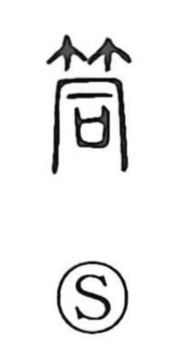

筒

Kun: tsutsu | On: tou
tube ・ cylinder ・ pipe
Explanation
筒 is a phono-semantic character: the bamboo radical 竹 supplies the idea of a bamboo vessel, while 同 serves as the phonetic and originally named a tubular wine cup. The Book of Documents (Gu Ming) records an offering of a vessel called 同瑁, highlighting the cup’s straight, tube-like form. Cut at a node, bamboo naturally yields a hollow cylinder—a ready-made container called tsutsu—hence the character’s core sense of a tube or pipe. In Japanese usage this extends to terms such as 筒井, a round well, and 筒先, the muzzle of a cannon.